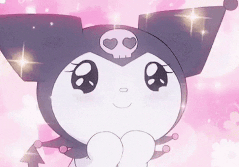
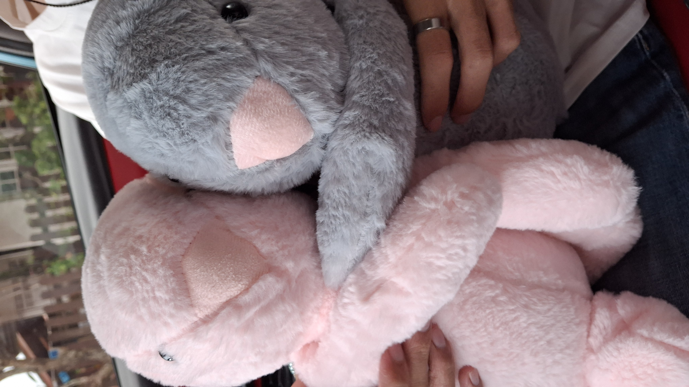
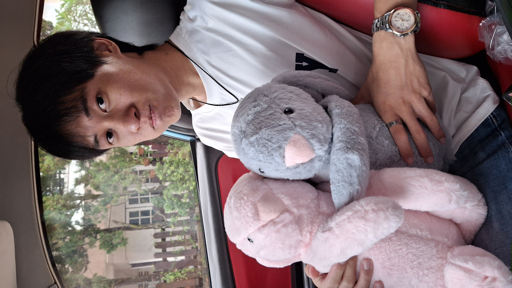
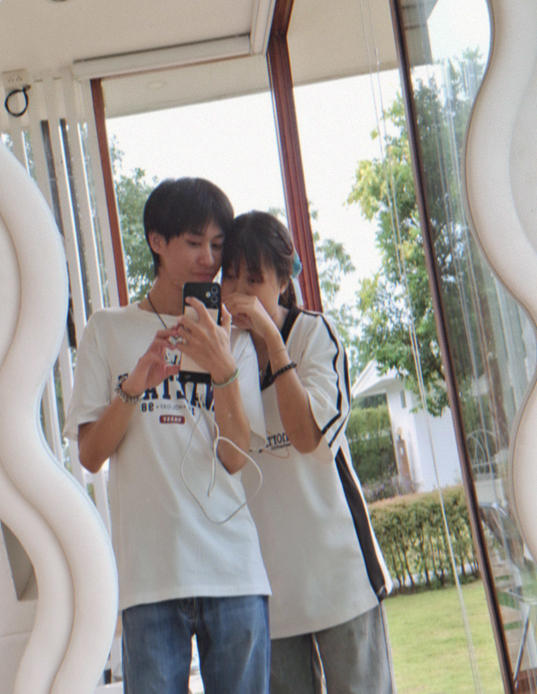
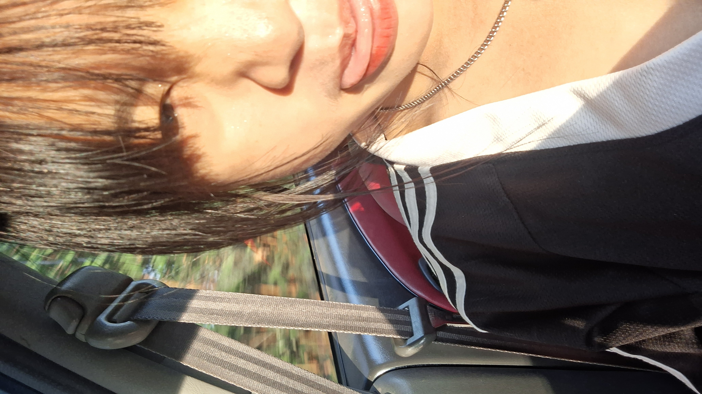
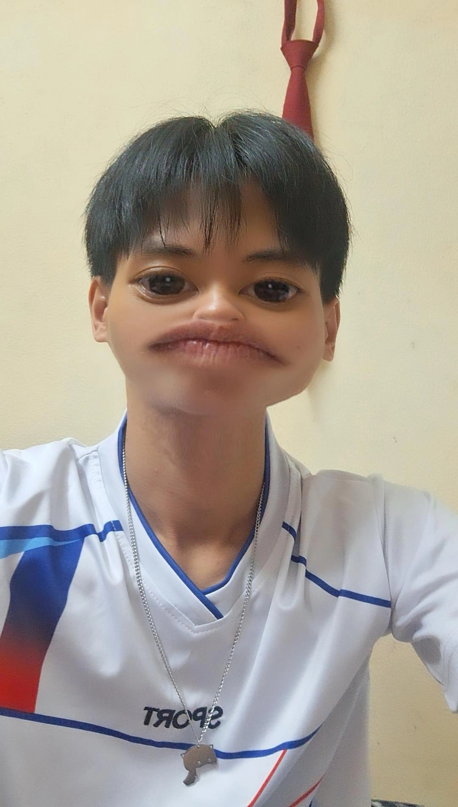

เราขอโทษนะคับ ที่เราชอบคิดไปเองว่าแฟนนอกใจเรา เราผิดไปแล้ว เราชอบพูดอะไรออกไปโดยไม่คิดเพราะอารมณ์ชั่ววูบทำให้แฟนฟังแล้วไม่สบายใจ ทำให้แฟนจะหมดรักเรา ที่เราพูดใส่แฟนเมื่อคืนเราไม่ได้ตั้งใจพูดออกไปแบบนั้นเราผิดไปแล้วที่เราพูดไปให้แฟน ต่อไปนี้เราจะไม่สงสัยแฟน จะไม่ตามแฟนอีก เราจะให้แฟนได้ไปกับเพื่อนบ้างถึงบ้านก็ให้ตรงเวลา มี gps ติดตลอดต่อไปนี้เราก็หายห่วงแล้วบางครั้งก็บอกเราด้วยนะคับ ถ้าไม่ทันบอกถึงบ้านก่อนก็ได้ ตอนนี้เราไม่คิดมากกับแฟนแล้วคับเมื่อคืนเรานอนคิดทั้งคืนเลยในสิ่งที่เราพูดไปมันไม่ดีเลย ทำให้แฟนดูแย่มากๆเราขอโทษนะคับ เราพึ่งครบรอบ 1 ปีของเราสองคนไปเราไม่อยากจะชวนให้แฟนทะเราะกันน้อยใจกันอีกเลยเพราะความคิดความชั่ววูบของเราทำให้เราได้ทะเราะกันเพราะความไม่เข้าใจเรา เราขอโทษนะคับแฟนที่ทำให้เป็นแบบนี้ เรารักแฟนนะคับเราไม่อยากให้แฟนเลิกกับเราเพราะอารมณ์ส่วนตัวของเราที่ว่าให้แฟนเลย เราไม่ชอบอารมณ์แบบนี้ของตัวเองเลย เรากลัวมากกลัวที่แฟนจะหมดรักเรา เรารักแฟนนะ เราอยากจะรักกับแฟนไปนานๆเลย เรารอที่จะไปเที่ยวกับแฟนรอเคาร์ดาวด้วยกันรอที่จะซื้อของกินอร่อยๆให้แฟน รอที่จะได้อวยพรวันเกิดแฟน รออวยพรวันครับรอแฟน รอที่จะมีแฟนไปด้วยกันทุกๆที่ในโลกนี้ที่เราจะไปด้วยกัน เรารักแฟนตลอดนะคับขอโทษที่ทำแบบนี้ทำให้แฟนต้องไม่สบายใจรู้สึกแย่มาก เราไม่อยากเลิกกันเลยเราอยากให้รักกันอยู่แบบนี้นานๆ เรารักแฟนนะคับรักมากที่สุดในโลก เรารอที่จะเอาของสำคัญให้แฟนอยู่นะคับ ถึงของมูลค่าอาจจะไม่แพงแต่เราให้มันจากใจเราเลยเรารักแฟนนะคับรักมากๆที่สุดในโลกเลย จากนี้ไปเราจะไม่ตามแฟนไม่ใส่ร้ายไม่ดีๆให้แฟนอีแล้วเรารักแฟนนะคับไม่มีวันไหนเราหมดรักแฟนเลยเราอาจจะขี้หึงไปหน่อยแต่ก็เพราะรักแฟนนะคับเป็นห่วงแฟนมากๆนะ รักนะคับแฟนนน วันนี้เรามีนัดด้วยกันนะคับเราอยากจะให้แฟนผ่อนคลายอารมณ์ดีนะคับแฟนน รักนะคับแฟนนน❤️😻😻
     